JAVASCRİPT STRING
JavaScript string veri türü, metinleri saklamak ve üzerinde işlem yapmak için kullanılır.
JavaScript String Veri Türü
Bir JavaScript string, basitçe bir grup karakteri saklamaya yarar. "Ali", "Ali Veli", "Bu bir web sitesidir", "sezon11" birer string örnekleridir. Bir string türündeki bir değişkene değer atarken string ifade tırnak içinde yazılmalıdır.Bu tırnak işareti tek veya çift olabilir.
Örnek
//çift tırnak
var adsoyad ="Ali Veli";
//veya tek tırnak ile
var adsoyad ='Ali Veli';
Bir string değişkene değer atarken, metnin içinde tek tırnak veya çift tırnak olmadığı müddetçe istediğiniz uzunlukta veri girebilirsiniz. Eğer metin içinde string yapısını bozacak tek tırnak veya çift tırnak varsa buna özel önlem almanız gerekir. Bir metinde string yapısını bozacak tek tırnak veya çift tırnak varsa o zaman JavaScript kaçış işaretini kullanmalısınız. Kaçış işareti \ işaretidir.
Örnek
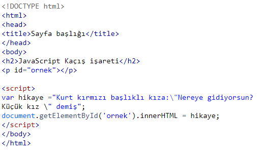
Ekran çıktısı
JavaScript Kaçış işareti
Kurt kırmızı başlıklı kıza:"Nereye gidiyorsun? Küçük kız " demişString Length (Stringin uzunluğu)
String yerleşik olarak bazı özelliklere sahiptir.length bunlardan biridir ve stringin uzunluğunu verir.Örnek
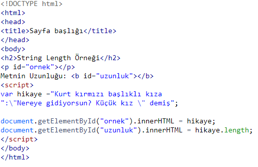
Ekran çıktısı
String Length Örneği
Kurt kırmızı başlıklı kıza:"Nereye gidiyorsun? Küçük kız " demişMetnin Uzunluğu: 64
Özel Karakterler
Yukarıda bahsedildiği gibi bir stringe atadığınız değer içinde " veya ' gibi özel karakterler varsa bu JavaScript tarafından yanlış anlaşılabilir. Bildiğiniz gibi JavaScript'de " ve ' karakterleri string değişkene veri atarken kullanılan karakterlerdir. Bu tür bir sorun ile karşılaşmamak için eğer metnin içinde " veya ' karakterleri varsa başına \ karakteri koyarak bunun metnin bir parçası olduğunu JavaScript'e bildiririz. \karakteri JavaScript'te Kaçış Karakteri olarak adlandırılır.Örnek
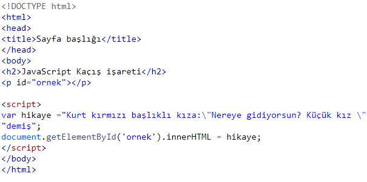
Ekran çıktısı
JavaScript Kaçış işareti
Kurt kırmızı başlıklı kıza:"Nereye gidiyorsun? Küçük kız " demiş\ kaçış karakteri
* Metinde tek tırnak varsa: \ '
* Metinde çift tırnak varsa \ "
* Metinde ters eğik çizgi varsa \\
şeklinde kullanılabilir.
JavaScript ile kod yazarken kod satırınızın çok uzun olmamasına dikkat edin. Uzun satırlar zor okunur bu sebepten bir satırı en fazla 80 karakter uzunluğunda bırakın.
Özellikle string değişkene değer atarken çok uzun bir metin kullanıyorsanız, bunu tek parça yapmak yerine + operatörü ile parçalı şekilde birleştirerek yapın.
JavaScript String Metodları
String metodları, string türü veriler üzerinde işlem yaparken faydalandığımız metodlardır. Normalde String ilkel bir türdür ve ilke türlerde özellik ve metodlar olmaz. Nesnelerin özellikleri ve metodları olur. Fakat JavaScript ilkel değerler için de metod ve özelliklere sahiptir. Çünkü JavaScript ilkel değerleri işlerken bunlara nesne gibi davranır.String Length (string uzunluğu)
length özelliği stringin uzunluğunu verir (karakter sayısını, boşluklarda dahil olmak üzere).Örnek
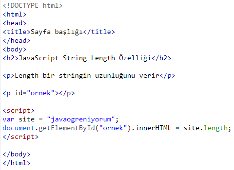
Ekran çıktısı
JavaScript String Length Özelliği
Length bir stringin uzunluğunu verir15
JavaScript String indexOf() ve lastIndexOf() Metodu
Bir string içindeki bir karakterin ya da metnin bir parçasının sıra numarasını (index) bulmak için indexOf metodu kullanılır. indexOf metodu kendine verilen karakteri ya da kelimeyi metnin içinde arar ve bulduğu ilk değerin sıra numarasını verir. Sıra numarası yani index string işlemlerinde çokca kullanılan bir özelliktir.Örnek
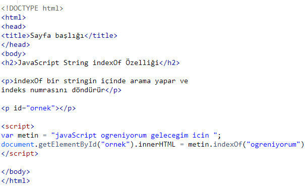
Ekran çıktısı
JavaScript String indexOf Özelliği
indexOf bir stringin içinde arama yapar ve indeks numrasını döndürür11
lastIndexOf metodu kendine verilen karakteri ya da kelimeyi metnin içinde arar ve bulduğu son değerin sıra numarasını verir.
Örnek
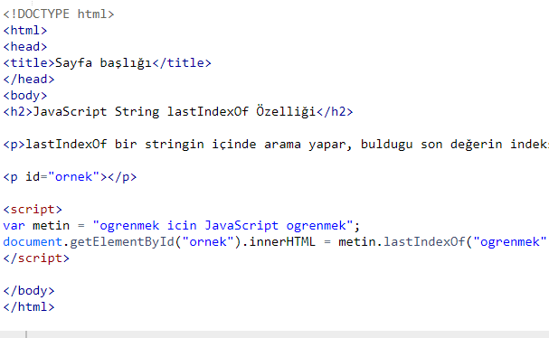
Ekran çıktısı
JavaScript String indexOf Özelliği
lastIndexOf bir stringin içinde arama yapar, buldugu son değerin indeks numrasını döndürür25
indexOf ve lastIndexOf metodu, kendine verilen değeri metin içinde bulamazsa geriye -1 döndürür. Bunun anlamı değer bulunamadı demektir.
Bunu unutmayın! JavaScript saymaya 0'dan başlar. Indeks numarasıda verilirken hesaplamaya sıfırdan başlanır. Yani birinci sıradaki karakterin index numarası 0'dır.
Her iki metod içinde aramamaya başlanılacak başlangıç numarası verilebilir. Yani diyebilirsinizki "aramaya 10. karakterden sonra başla". Bunu metoda ikinci bir parametre vererek yaparız.
Metnin içinde kelime aramak için ayrıca search() metodu vardır. Bu metod indexOf ile aynı çalışır ama search() metodu çok daha güçlüdür. Çok daha fazla parametre alır. Daha fazla seçeneğe sahiptir
String'i parçalara ayırma
JavaScript ile çoğu zaman metinler üzerinde işlemler yaparız. Bazen bir metnin içinde kelime arar bazen de metnin içinden belirli bir bölümü çıkartmak isteriz.JavaScript bu tür metin işlemleri için bize 3 metod sunar:
*slice(başlangıç, bitiş)
*substring(başlangıç, bitiş)
*substr(başlangıç, bitiş)
Bu metodlar ile metinler üzerinde ayrıştırma işlemleri gerçekleştirilir.
JavaScript string slice() Metodu
slice() metodu string içinden belirli bir bölümü çıkartmaya yarar. JavaScript string slice() metodu iki parametre alır: ilk parametre başlama indeksi, ikinci parametre bitiş indeksidir. Bu iki indeks numarası arasındaki bölüm metnin içinden çıkartılır ve yeni bir string değer olarak döndürülür:Örnek
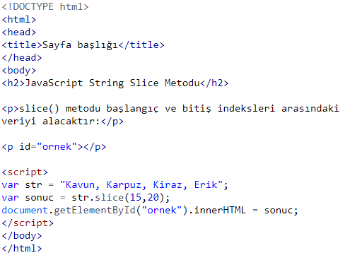
Ekran çıktısı
JavaScript String Slice Metodu
slice() metodu başlangıç ve bitiş indeksleri arasındaki veriyi alacaktır:Kiraz
Eğer parametre değerlerini negatif verirseniz o zaman parçalama işlemi metnin sonundan başlayacaktır. Aşağıdaki örnekte, işlem sağdan sola 11 karakter ilerleyecek ve kesmeye başlayacaktır. Kesme işlemi yine sağdan indeksi 6 olan karaktere kadar devam edecek ve iki indeks arasında kalan metin alınacaktır.
Örnek
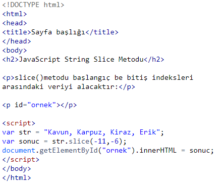
Ekran çıktısı
JavaScript String Slice Metodu
slice()metodu başlangıç be bitiş indeksleri arasındaki veriyi alacaktır:Kiraz
JavaScript string substring() Metodu
substring() bir önceki yöntem olan slice() ile benzerdir. İki metod arasındaki fark substring() metodu negatif değer almaz.Örnek
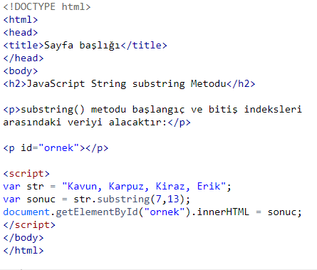
Ekran çıktısı
JavaScript String substring Metodu
substring() metodu başlangıç ve bitiş indeksleri arasındaki veriyi alacaktır:Karpuz
Eğer ilk parametre negatif olursa, başlama pozisyonu metnin sonundan hesaplanır. İkinci parametre negatif olamaz. İkinci parametre atlanırsa, başlangıç indeksinden sonraki tüm metin alınır.
JavaScript String replace() Metodu
replace() metodu ile bir metnin içinde arama yapıp, bulduğumuz değerleri yine istediğimiz bir değer ile değiştirebiliriz. Varsayılan olarak JavaScript string replace() metodu, sadece ilk bulduğu değeri değiştirir.JavaScript ile Metni Büyük Harf veya Küçük Harfe Çevirme (toUpperCase() ve toLowerCase() metodu)
Eğer bir metni tamamen büyük harfe çevirmek isterseniz JavaScript string toUpperCase() metodunu kullanabilirsiniz.Örnek
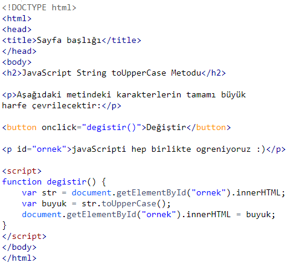
Ekran çıktısı
JAVASCRIPTI HEP BIRLIKTE OGRENIYORUZ:)
Eğer bir metni tamamen küçük harfe çevirmek isterseniz JavaScript string toLowerCase() metodunu kullanabilirsiniz:
Örnek
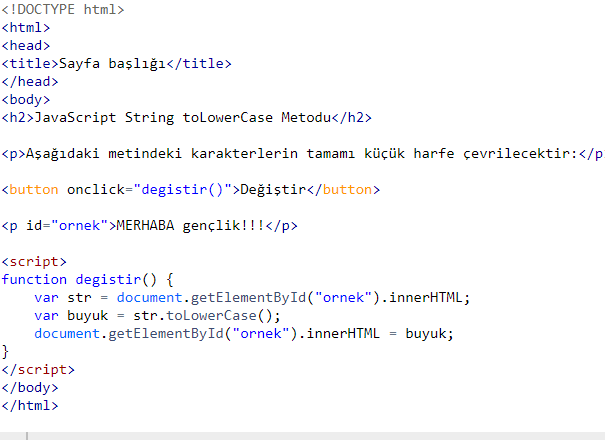
Ekran çıktısı
merhaba gençlik!!!
JavaScript String concat() Metodu
concat() metodu iki veya daha fazla stringi birleştirmeye yarar. Daha önceden string birleştirme için + operatörünü kullanmıştık. concat() de aynı işlevi görür.Örnek
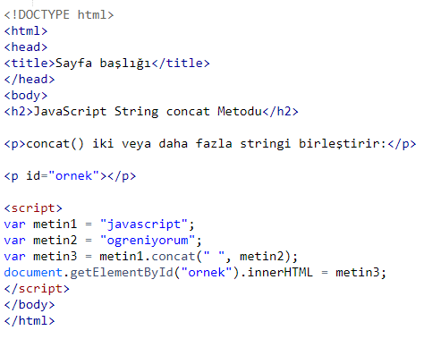
Ekran çıktısı
JavaScript String concat Metodu
concat() iki veya daha fazla stringi birleştirir:javascript ogreniyorum
JavaScript String split() Metodu
Elinizde bir ayırıcı ile ayrılmış veri varsa bunu parçalara bölmek, bir diziye aktarmak isteyebilirsiniz.Örneğin mart, nisan, mayıs şeklinde virgül ile ayrılmış verimiz olsun. JavaScript string split() metonu ile bu veriyi ayrıştırmak ve ayları bir diziye yerleştirmek mümkündür.
Örnek
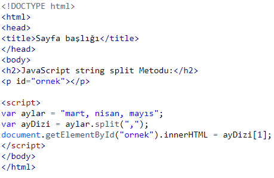
Ekran çıktısı
JavaScript string split Metodu
nisanBu şekilde belirli bir ayıraç ile gelen veriyi kolayca parçayalabilir, daha düzenli veri elde edebiliriz.
JavaScript Sayılar
Farklı programlama dillerinde farklı sayı türleri vardır. Örneğin C# dilinde int, int16, decimal gibi farklı türler vardır. 16 gibi bir sayıyı tutmak için int türü yeterli olurken, 3.15 gibi küsurlu değerleri tutmak için decimal kullanılır. JavaScript programlama dilinde tek bir sayı türü vardır.Örnek
var adet = 15 ; // tam sayı
var fiyat = 15; // Küsurlu sayılar. Para gibi.
Çok büyük veya çok küçük sayılar bilimsel gösterim ile yazılabilir:
varsayi1 = 321e5; // 32100000
var = ; // 0.00321
JavaScript diğer programlama dillerinden farklı olarak, int, short, long gibi farklı sayı türleri tanımlamaz. JavaScript sayıları her zaman 64-bit Floating Point (kayan nokta) olarak tutar.
JavaScript NaN Nedir? (Not a Number / Bir Sayı Değil)
Fakat eğer string değer sayısal değer içeriyorsa sonuç sayı olur:JavaScript Programlama Dilinde Sayılar Nesne Olabilir
Daha önce stringde gördüğümüz gibi sayılar nesne olarak tanımlanabilir.Normalde JavaScript sayıları ilkel değerlere sahiptir: 1,255, 5678 gibi.
Fakat var sayiNesne= new Number(123); şeklinde nesne olarak tanımlanabilir.
Bu şekilde tanımlamak JavaScript'i yavaşlatır. O sebepten gerçekten ne yaptığınızı bilmiyoranız kullanmayın.
JavaScript Sayı Metodları
JavaScript sayı metodları sayılarla çalışırken bize yardımcı olurlar.JavaScript toString() Metod
toString() metodu sayıyı stringe çevirir. Sayıları sadece sayısal işlemlerde kullanırız. Bunun dışında bir string ile sayısı işleyeceksek, sayısal değeri stringe çeviririz.Örnek
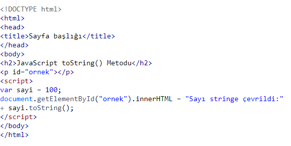
Ekran çıktısı
JavaScript toString() Metod
Sayı stringe çevrildi:100JavaScript toFixed() Metodu
toFixed() metodu, belirtilen sayıda ondalık değere sahip string döndürür. Özellikle para gibi değerleri tutan değişkenlerde kullanılır.Örnek
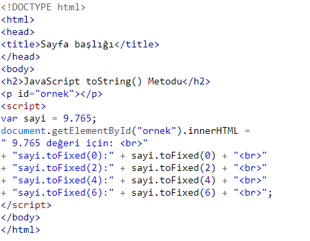
Ekran çıktısı
JavaScript toString() Metodu
9.765 değeri için:sayi.toFixed(0):10
sayi.toFixed(2):9.77
sayi.toFixed(4):9.7650
sayi.toFixed(6):9.765000
JavaScript toPrecision() Metodu
JavaScript toPrecision(n) metodu uygulanan sayı, parentez içinde verilen değerden daha fazla tam sayı içeriyorsa bilimsel (üstel) gösterim ile döndürür:Örneğin: (312).toPrecision(2) 3.1e+2 sonucunu döndürür.
Bilimsel gösterim, çok büyük veya küçük sayıları göstermek için kullanılan bir standarttır.
Bilimsel çalışmalarda çok büyük ve küçük sayılar kullanılır
toPrecision(n) metodu daha çok ondalıklı işlemlerde kullanılır. Parantez içinde verilen sayı kadar basamağı size döndürür.
Örnek
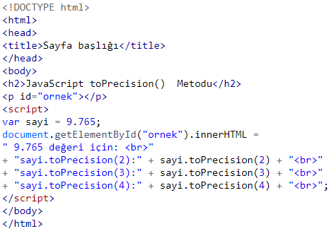
Ekran çıktısı
JavaScript toPrecision() Metodu
9.765 değeri için:sayi.toPrecision(2):9.8
sayi.toPrecision(3):9.77
sayi.toPrecision(4):9.765
JavaScript Bir Değişkeni Sayıya Çevirmek
JavaScript programlama dilinle bir değişkeni sayıya çevirmek için 3 metod vardır:*Number() metodu
*parseInt() metodu
*parseFloat() metodu
Bunlar sayı metodları değildir fakat global JavaScript metodlarıdır.
JavaScript Number() Metodu
Number() metodu JavaScript değişkenleri sayıya çevirmek için kulllanılır:Örnek
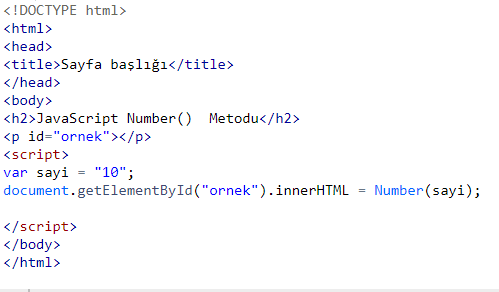
Ekran çıktısı
JavaScript Number() Metodu
10JavaScript parseInt() Metodu
parseInt() string değeri ayrıştırır, geriye tam sayı döndürür:JavaScript parseFloat() Metodu
parseFloat() string değeri ayrıştırır, geriye sayı döndürür. parseInt() metodundan farklı olarak varsa ondalık haneyi de döndürür:Örnek
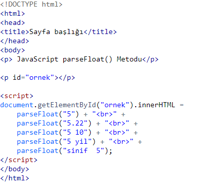
Ekran çıktısı
JavaScript parseFloat() Metodu
55.22
5
5
NaN